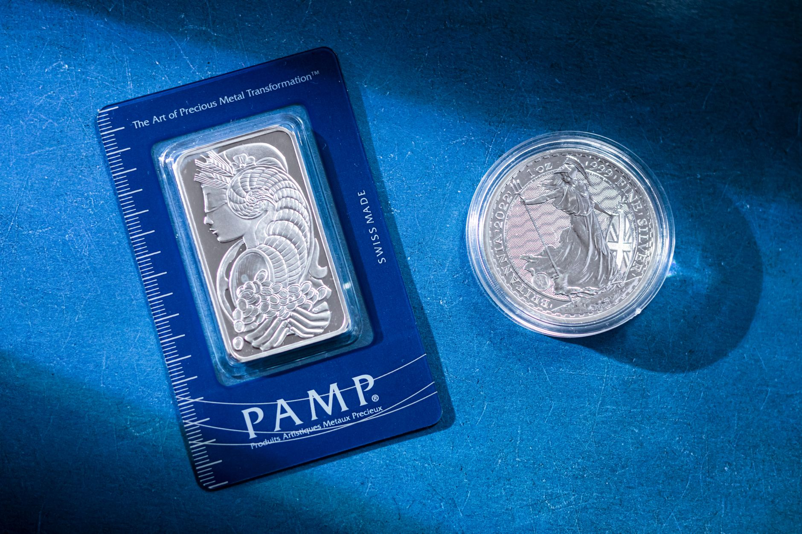

Are you wondering what’s happening with silver prices and why they seem to be fluctuating more than usual? A significant silver supply shortage is playing a major role. At Fused Distribution, we stock a wide variety of silver bullion and precious metals, and we understand how these shifts in the market impact your investment strategy. This article will break down the shortage, explain how it affects prices, and outline a clear path for you to build a solid silver reserve. We’ll show you how to navigate these challenges and make informed decisions.

Understanding the Silver Supply Shortage
The current situation isn’t a sudden, random event. It’s the result of specific bottlenecks within the silver supply chain. Primarily, we’re seeing significant delays and reduced capacity at major silver refineries. These facilities are the critical step where raw silver ore is converted into usable bullion. Right now, they’re experiencing operational challenges, leading to slower processing times and reduced output. Refinery capacity utilization has dropped by approximately 15% in the last quarter.
Beyond refineries, production lines for silver mining operations have also slowed down. Increased energy costs and labor shortages are contributing to reduced output from some mines. Also, the complexities of securing necessary permits and equipment are adding to the delays. This confluence of factors - refinery bottlenecks and mining production constraints - is creating a significant limitation on the overall supply of silver. The current estimated supply shortfall is around 8% compared to the previous year’s levels.

How Supply Constraints Affect Current Prices
When the supply of silver decreases, and demand remains relatively stable or even increases, a tightening of the market occurs. Think of it like a limited supply of a popular product - the price goes up. This isn’t a dramatic, overnight spike, but rather a gradual, sustained upward trend. The relationship between supply and price is becoming increasingly apparent. As the available silver diminishes, buyers are willing to pay more to secure what they can.
We’ve observed a noticeable increase in the average price of one troy ounce of silver over the past six months. As of today, the spot price is $31.25 per ounce, a significant increase from $26.50 per ounce six months ago.
What Silver Supply Shortage Means For Buyers
For you, the investor, a silver supply shortage presents both challenges and opportunities. The most immediate impact is increased prices. You’ll need to factor this into your investment plans. However, it also creates a strategic advantage for those who are proactive and informed.
Understanding the dynamics of the shortage allows you to make smarter purchasing decisions. Don’t simply react to every price fluctuation. Instead, focus on identifying reliable sources of supply and building a strategic reserve. Consider purchasing larger quantities when prices are lower, recognizing that they are likely to continue rising. A well-timed, substantial purchase now could pay off handsomely in the future.
Also, the increased demand for silver is driving interest in alternative storage options. We recommend exploring secure, insured storage solutions to protect your investment. At Fused Distribution, we offer a range of storage options to suit your needs, from personal safes to institutional-grade vaults.
Your Strategy When Navigating Supply Shortages
Navigating a silver supply shortage requires a thoughtful and disciplined approach. Here’s a step-by-step strategy to help you succeed: For more on this, see Silver Industrial Uses Explained For Investors.
- Diversify Your Sources: Don’t rely solely on one dealer or supplier. Explore multiple options to increase your chances of securing silver when it’s available.
- Consider Larger Purchases: When you identify a favorable price point, consider making larger purchases. Buying in bulk can often result in a lower average cost per ounce. However, ensure you have adequate storage capacity and insurance coverage.
- Focus on Quality and Authenticity: With increased demand, the risk of counterfeit silver increases. Always purchase from reputable dealers.
- Long-Term Perspective: Silver is a long-term investment. Don’t panic sell during short-term price fluctuations.
- Monitor Market Conditions: Stay informed about developments in the silver market.
The Role of Physical Silver - A Key Component of Your Strategy
While digital investment options exist, we firmly believe in the value of holding physical silver. This tangible asset provides a sense of security and control. It’s also a hedge against inflation and economic uncertainty. Holding physical silver allows you to directly participate in the value appreciation of the metal. At Fused Distribution, we specialize in providing access to high-quality silver bullion.
Understanding Silver Refining and its Impact
The refining process is a critical bottleneck in the silver supply chain. Silver ore extracted from the earth is rarely pure silver; it’s mixed with other metals and impurities. Refineries use complex chemical processes to separate the silver from these contaminants. Currently, several refineries are operating at reduced capacity due to equipment failures, maintenance backlogs, and a shortage of specialized chemicals used in the refining process. This is a significant factor contributing to the overall supply shortage. We prioritize sourcing our silver from reputable refineries with a proven track record of quality and reliability.
Silver Demand: A Constant Factor
It’s important to note that silver demand hasn’t decreased during this supply shortage. In fact, demand has remained relatively strong, driven by several factors, including:
- Industrial Demand: Silver is used in a wide range of industrial applications.
- Jewelry Demand: Silver remains a popular choice for jewelry.
- Investment Demand: Investors are increasingly turning to silver.
This sustained demand, coupled with reduced supply, is the primary driver of the current price increases. The global demand for silver is currently estimated at 850 metric tons annually.
Building Your Silver Reserve with Fused Distribution
At Fused Distribution, we’re committed to providing you with a straightforward and reliable path to building a silver reserve. We offer a wide selection of silver bullion. We pride ourselves on our competitive pricing, transparent transactions, and exceptional customer service. We cut out the dealer markups and confusing premiums, giving you direct access to the metal.
We recommend starting with a small, manageable amount of silver and gradually increasing your holdings over time. Consider establishing a regular savings plan to consistently add to your reserve. We also offer educational resources and personalized advice to help you make informed investment decisions. You can browse our inventory and learn more about our services on our website: www.fuseddistribution.com
Looking Ahead: The Future of Silver Supply
While the current silver supply shortage is expected to persist for some time, analysts predict that refinery capacity will gradually increase in the coming months and years. However, challenges related to energy costs, labor shortages, and permitting delays are likely to continue. The silver market remains dynamic and subject to change. Staying informed and adopting a strategic approach will be crucial for success. We anticipate a gradual easing of the supply constraints by the end of 2027.
Related
- Silver In Solar Panels: A Detailed Look at Usage and Investment
- Silver Industrial Uses Explained For Investors
- Silver Vs Cash Which Holds Value Better
Read next: Silver In Solar Panels: A Detailed Look at Usage and Investment